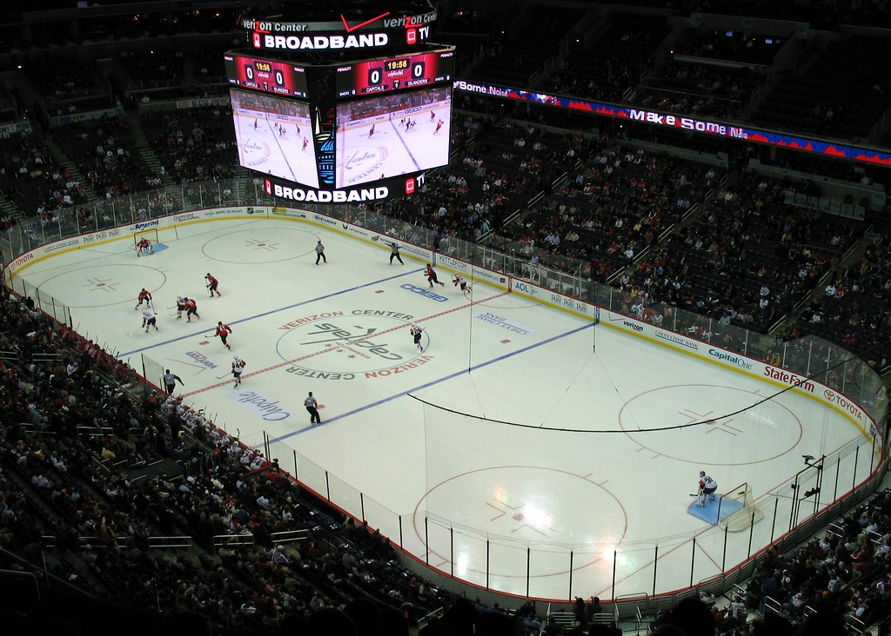

Jääkiekko on urheilulaji, jossa kaksi joukkuetta kilpailee toisiaan vastaan. Pelivälineenä on kiekko, jota joukkueet pyrkivät hallitsemaan ja saamaan kiekko vastustajan maaliin. Peliä pelataan areenalla jään päällä. Pelaajilla on jalassa luistimet ja paljon muuta suojavarustetta kehon päällä, kiekkoa kuljetetaan ja lyödään mailoilla. Joukkueiden tavoitteena on tehdä enemmän maaleja kuin vastustaja, ja peli kestää yleensä kolme erää, joista jokainen on 20 minuuttia pitkä. Jääkiekko on nopea ja fyysinen laji, joka vaatii pelaajilta nopeutta, ketteryyttä ja taktista ajattelua. Jääkiekkojoukkueeseen kuuluu pelaajien lisäksi valmentajat ja muu huoltohenkilökunta. Pelissä on joukkueiden lisäksi neljä tuomaria, jotka valvovat peliä ja varmistavat, että sääntöjä noudatetaan.

Jääkiekko areena